Graphical posterior predictive checks
pp_check.stanreg.RdInterface to the PPC (posterior predictive checking) module
in the bayesplot package, providing various plots comparing the
observed outcome variable \(y\) to simulated datasets \(y^{rep}\)
from the posterior predictive distribution. The pp_check method for
stanreg-objects prepares the arguments required for the specified
bayesplot PPC plotting function and then calls that function. It is
also straightforward to use the functions from the bayesplot package
directly rather than via the pp_check method. Examples of both are
given below.
# S3 method for stanreg pp_check(object, plotfun = "dens_overlay", nreps = NULL, seed = NULL, ...)
Arguments
| object | A fitted model object returned by one of the
rstanarm modeling functions. See |
|---|---|
| plotfun | A character string naming the bayesplot
PPC function to use. The default is to call
|
| nreps | The number of \(y^{rep}\) datasets to generate from the
posterior predictive distribution and show in
the plots. The default depends on |
| seed | An optional |
| ... | Additonal arguments passed to the bayesplot function
called. For many plotting functions |
Value
pp_check returns a ggplot object that can be further
customized using the ggplot2 package.
Note
For binomial data, plots of \(y\) and \(y^{rep}\) show the
proportion of 'successes' rather than the raw count. Also for binomial
models see ppc_error_binned for binned residual
plots.
References
Gelman, A., Carlin, J. B., Stern, H. S., Dunson, D. B., Vehtari, A., and Rubin, D. B. (2013). Bayesian Data Analysis. Chapman & Hall/CRC Press, London, third edition. (Ch. 6)
Gabry, J. , Simpson, D. , Vehtari, A. , Betancourt, M. and Gelman, A. (2019), Visualization in Bayesian workflow. J. R. Stat. Soc. A, 182: 389-402. doi:10.1111/rssa.12378, (journal version, arXiv preprint, code on GitHub)
See also
The vignettes in the bayesplot package for many examples. Examples of posterior predictive checks can also be found in the rstanarm vignettes and demos.
PPC-overview(bayesplot) for links to the documentation for all the available plotting functions.posterior_predictfor drawing from the posterior predictive distribution.color_scheme_setto change the color scheme of the plots.
Examples
fit <- stan_glmer(mpg ~ wt + am + (1|cyl), data = mtcars, iter = 400, chains = 2) # just to keep example quick#> #> SAMPLING FOR MODEL 'continuous' NOW (CHAIN 1). #> Chain 1: #> Chain 1: Gradient evaluation took 3e-05 seconds #> Chain 1: 1000 transitions using 10 leapfrog steps per transition would take 0.3 seconds. #> Chain 1: Adjust your expectations accordingly! #> Chain 1: #> Chain 1: #> Chain 1: Iteration: 1 / 400 [ 0%] (Warmup) #> Chain 1: Iteration: 40 / 400 [ 10%] (Warmup) #> Chain 1: Iteration: 80 / 400 [ 20%] (Warmup) #> Chain 1: Iteration: 120 / 400 [ 30%] (Warmup) #> Chain 1: Iteration: 160 / 400 [ 40%] (Warmup) #> Chain 1: Iteration: 200 / 400 [ 50%] (Warmup) #> Chain 1: Iteration: 201 / 400 [ 50%] (Sampling) #> Chain 1: Iteration: 240 / 400 [ 60%] (Sampling) #> Chain 1: Iteration: 280 / 400 [ 70%] (Sampling) #> Chain 1: Iteration: 320 / 400 [ 80%] (Sampling) #> Chain 1: Iteration: 360 / 400 [ 90%] (Sampling) #> Chain 1: Iteration: 400 / 400 [100%] (Sampling) #> Chain 1: #> Chain 1: Elapsed Time: 0.136456 seconds (Warm-up) #> Chain 1: 0.082549 seconds (Sampling) #> Chain 1: 0.219005 seconds (Total) #> Chain 1: #> #> SAMPLING FOR MODEL 'continuous' NOW (CHAIN 2). #> Chain 2: #> Chain 2: Gradient evaluation took 3.1e-05 seconds #> Chain 2: 1000 transitions using 10 leapfrog steps per transition would take 0.31 seconds. #> Chain 2: Adjust your expectations accordingly! #> Chain 2: #> Chain 2: #> Chain 2: Iteration: 1 / 400 [ 0%] (Warmup) #> Chain 2: Iteration: 40 / 400 [ 10%] (Warmup) #> Chain 2: Iteration: 80 / 400 [ 20%] (Warmup) #> Chain 2: Iteration: 120 / 400 [ 30%] (Warmup) #> Chain 2: Iteration: 160 / 400 [ 40%] (Warmup) #> Chain 2: Iteration: 200 / 400 [ 50%] (Warmup) #> Chain 2: Iteration: 201 / 400 [ 50%] (Sampling) #> Chain 2: Iteration: 240 / 400 [ 60%] (Sampling) #> Chain 2: Iteration: 280 / 400 [ 70%] (Sampling) #> Chain 2: Iteration: 320 / 400 [ 80%] (Sampling) #> Chain 2: Iteration: 360 / 400 [ 90%] (Sampling) #> Chain 2: Iteration: 400 / 400 [100%] (Sampling) #> Chain 2: #> Chain 2: Elapsed Time: 0.139763 seconds (Warm-up) #> Chain 2: 0.081983 seconds (Sampling) #> Chain 2: 0.221746 seconds (Total) #> Chain 2:#> Warning: Bulk Effective Samples Size (ESS) is too low, indicating posterior means and medians may be unreliable. #> Running the chains for more iterations may help. See #> http://mc-stan.org/misc/warnings.html#bulk-ess#> Warning: Tail Effective Samples Size (ESS) is too low, indicating posterior variances and tail quantiles may be unreliable. #> Running the chains for more iterations may help. See #> http://mc-stan.org/misc/warnings.html#tail-ess# Compare distribution of y to distributions of multiple yrep datasets pp_check(fit)pp_check(fit, plotfun = "boxplot", nreps = 10, notch = FALSE)pp_check(fit, plotfun = "hist", nreps = 3)#>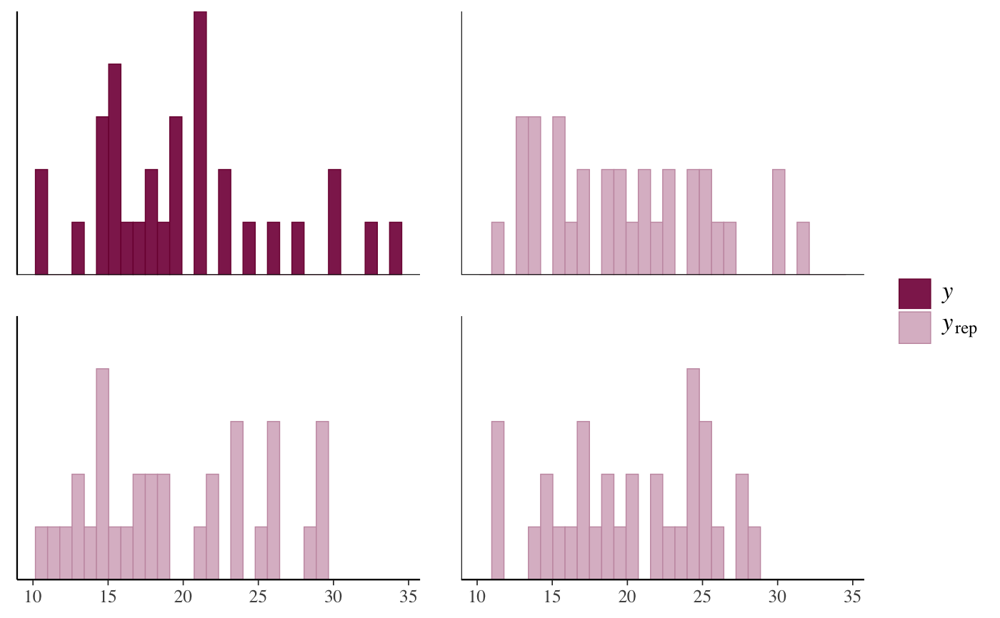# \donttest{ # Same plot (up to RNG noise) using bayesplot package directly bayesplot::ppc_hist(y = mtcars$mpg, yrep = posterior_predict(fit, draws = 3))#># Check histograms of test statistics by level of grouping variable 'cyl' pp_check(fit, plotfun = "stat_grouped", stat = "median", group = "cyl")#>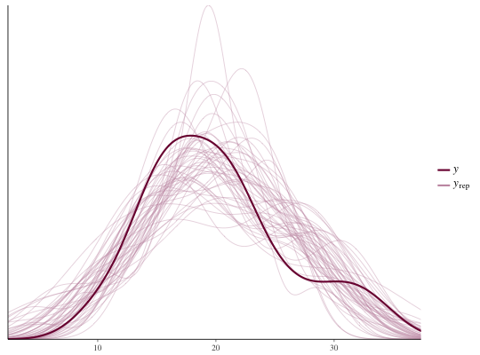# Defining a custom test statistic q25 <- function(y) quantile(y, probs = 0.25) pp_check(fit, plotfun = "stat_grouped", stat = "q25", group = "cyl")#> Error in get(as.character(FUN), mode = "function", envir = envir): object 'q25' of mode 'function' was not found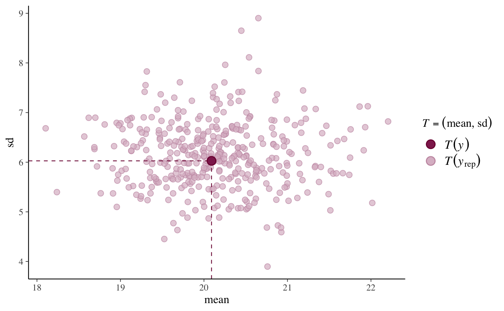# Scatterplot of y vs. average yrep pp_check(fit, plotfun = "scatter_avg") # y vs. average yrep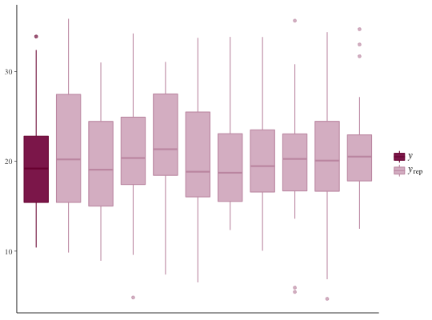# Same plot (up to RNG noise) using bayesplot package directly bayesplot::ppc_scatter_avg(y = mtcars$mpg, yrep = posterior_predict(fit))# Scatterplots of y vs. several individual yrep datasets pp_check(fit, plotfun = "scatter", nreps = 3)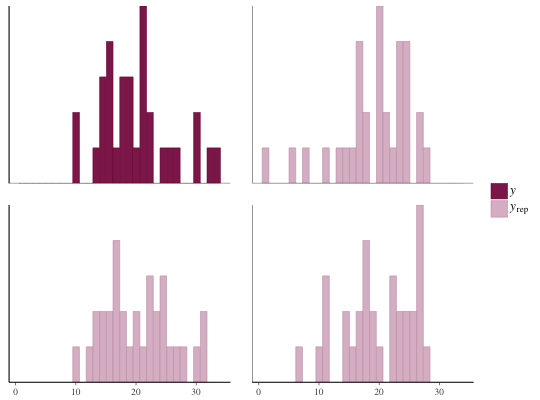# Same plot (up to RNG noise) using bayesplot package directly bayesplot::ppc_scatter(y = mtcars$mpg, yrep = posterior_predict(fit, draws = 3))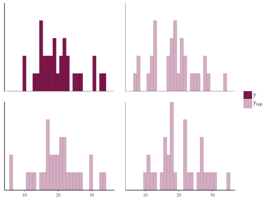# yrep intervals with y points overlaid # by default 1:length(y) used on x-axis but can also specify an x variable pp_check(fit, plotfun = "intervals")#>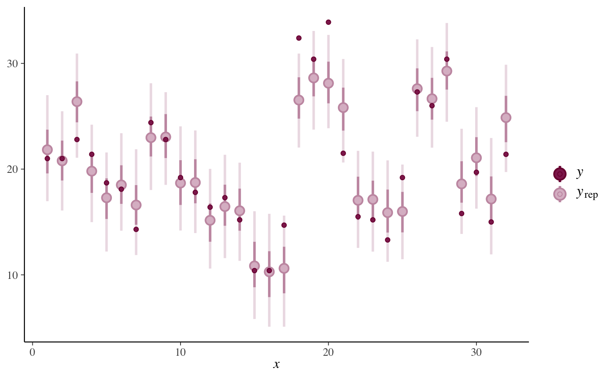# Same plot (up to RNG noise) using bayesplot package directly bayesplot::ppc_intervals(y = mtcars$mpg, yrep = posterior_predict(fit), x = mtcars$wt) + ggplot2::xlab("wt")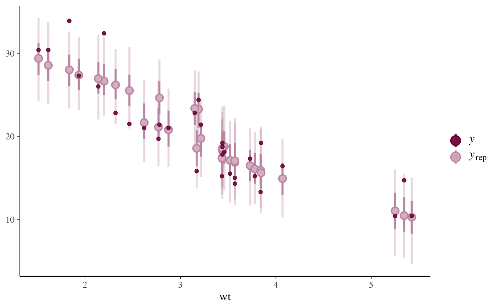# predictive errors pp_check(fit, plotfun = "error_hist", nreps = 6)#>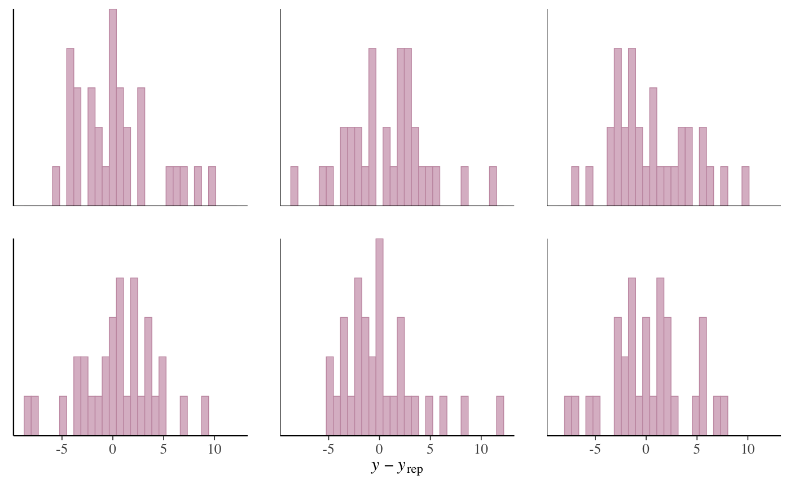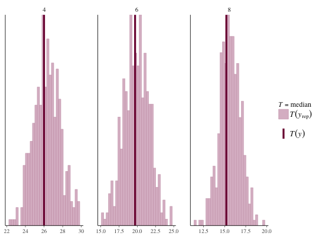# Example of a PPC for ordinal models (stan_polr) fit2 <- stan_polr(tobgp ~ agegp, data = esoph, method = "probit", prior = R2(0.2, "mean"), init_r = 0.1)#> #> SAMPLING FOR MODEL 'polr' NOW (CHAIN 1). #> Chain 1: #> Chain 1: Gradient evaluation took 0.000339 seconds #> Chain 1: 1000 transitions using 10 leapfrog steps per transition would take 3.39 seconds. #> Chain 1: Adjust your expectations accordingly! #> Chain 1: #> Chain 1: #> Chain 1: Iteration: 1 / 2000 [ 0%] (Warmup) #> Chain 1: Iteration: 200 / 2000 [ 10%] (Warmup) #> Chain 1: Iteration: 400 / 2000 [ 20%] (Warmup) #> Chain 1: Iteration: 600 / 2000 [ 30%] (Warmup) #> Chain 1: Iteration: 800 / 2000 [ 40%] (Warmup) #> Chain 1: Iteration: 1000 / 2000 [ 50%] (Warmup) #> Chain 1: Iteration: 1001 / 2000 [ 50%] (Sampling) #> Chain 1: Iteration: 1200 / 2000 [ 60%] (Sampling) #> Chain 1: Iteration: 1400 / 2000 [ 70%] (Sampling) #> Chain 1: Iteration: 1600 / 2000 [ 80%] (Sampling) #> Chain 1: Iteration: 1800 / 2000 [ 90%] (Sampling) #> Chain 1: Iteration: 2000 / 2000 [100%] (Sampling) #> Chain 1: #> Chain 1: Elapsed Time: 0.398418 seconds (Warm-up) #> Chain 1: 0.559773 seconds (Sampling) #> Chain 1: 0.958191 seconds (Total) #> Chain 1: #> #> SAMPLING FOR MODEL 'polr' NOW (CHAIN 2). #> Chain 2: #> Chain 2: Gradient evaluation took 2.8e-05 seconds #> Chain 2: 1000 transitions using 10 leapfrog steps per transition would take 0.28 seconds. #> Chain 2: Adjust your expectations accordingly! #> Chain 2: #> Chain 2: #> Chain 2: Iteration: 1 / 2000 [ 0%] (Warmup) #> Chain 2: Iteration: 200 / 2000 [ 10%] (Warmup) #> Chain 2: Iteration: 400 / 2000 [ 20%] (Warmup) #> Chain 2: Iteration: 600 / 2000 [ 30%] (Warmup) #> Chain 2: Iteration: 800 / 2000 [ 40%] (Warmup) #> Chain 2: Iteration: 1000 / 2000 [ 50%] (Warmup) #> Chain 2: Iteration: 1001 / 2000 [ 50%] (Sampling) #> Chain 2: Iteration: 1200 / 2000 [ 60%] (Sampling) #> Chain 2: Iteration: 1400 / 2000 [ 70%] (Sampling) #> Chain 2: Iteration: 1600 / 2000 [ 80%] (Sampling) #> Chain 2: Iteration: 1800 / 2000 [ 90%] (Sampling) #> Chain 2: Iteration: 2000 / 2000 [100%] (Sampling) #> Chain 2: #> Chain 2: Elapsed Time: 0.433356 seconds (Warm-up) #> Chain 2: 0.416801 seconds (Sampling) #> Chain 2: 0.850157 seconds (Total) #> Chain 2: #> #> SAMPLING FOR MODEL 'polr' NOW (CHAIN 3). #> Chain 3: #> Chain 3: Gradient evaluation took 2.8e-05 seconds #> Chain 3: 1000 transitions using 10 leapfrog steps per transition would take 0.28 seconds. #> Chain 3: Adjust your expectations accordingly! #> Chain 3: #> Chain 3: #> Chain 3: Iteration: 1 / 2000 [ 0%] (Warmup) #> Chain 3: Iteration: 200 / 2000 [ 10%] (Warmup) #> Chain 3: Iteration: 400 / 2000 [ 20%] (Warmup) #> Chain 3: Iteration: 600 / 2000 [ 30%] (Warmup) #> Chain 3: Iteration: 800 / 2000 [ 40%] (Warmup) #> Chain 3: Iteration: 1000 / 2000 [ 50%] (Warmup) #> Chain 3: Iteration: 1001 / 2000 [ 50%] (Sampling) #> Chain 3: Iteration: 1200 / 2000 [ 60%] (Sampling) #> Chain 3: Iteration: 1400 / 2000 [ 70%] (Sampling) #> Chain 3: Iteration: 1600 / 2000 [ 80%] (Sampling) #> Chain 3: Iteration: 1800 / 2000 [ 90%] (Sampling) #> Chain 3: Iteration: 2000 / 2000 [100%] (Sampling) #> Chain 3: #> Chain 3: Elapsed Time: 0.608242 seconds (Warm-up) #> Chain 3: 0.564784 seconds (Sampling) #> Chain 3: 1.17303 seconds (Total) #> Chain 3: #> #> SAMPLING FOR MODEL 'polr' NOW (CHAIN 4). #> Chain 4: #> Chain 4: Gradient evaluation took 2.9e-05 seconds #> Chain 4: 1000 transitions using 10 leapfrog steps per transition would take 0.29 seconds. #> Chain 4: Adjust your expectations accordingly! #> Chain 4: #> Chain 4: #> Chain 4: Iteration: 1 / 2000 [ 0%] (Warmup) #> Chain 4: Iteration: 200 / 2000 [ 10%] (Warmup) #> Chain 4: Iteration: 400 / 2000 [ 20%] (Warmup) #> Chain 4: Iteration: 600 / 2000 [ 30%] (Warmup) #> Chain 4: Iteration: 800 / 2000 [ 40%] (Warmup) #> Chain 4: Iteration: 1000 / 2000 [ 50%] (Warmup) #> Chain 4: Iteration: 1001 / 2000 [ 50%] (Sampling) #> Chain 4: Iteration: 1200 / 2000 [ 60%] (Sampling) #> Chain 4: Iteration: 1400 / 2000 [ 70%] (Sampling) #> Chain 4: Iteration: 1600 / 2000 [ 80%] (Sampling) #> Chain 4: Iteration: 1800 / 2000 [ 90%] (Sampling) #> Chain 4: Iteration: 2000 / 2000 [100%] (Sampling) #> Chain 4: #> Chain 4: Elapsed Time: 0.412907 seconds (Warm-up) #> Chain 4: 0.46905 seconds (Sampling) #> Chain 4: 0.881957 seconds (Total) #> Chain 4:pp_check(fit2, plotfun = "bars", nreps = 500, prob = 0.5)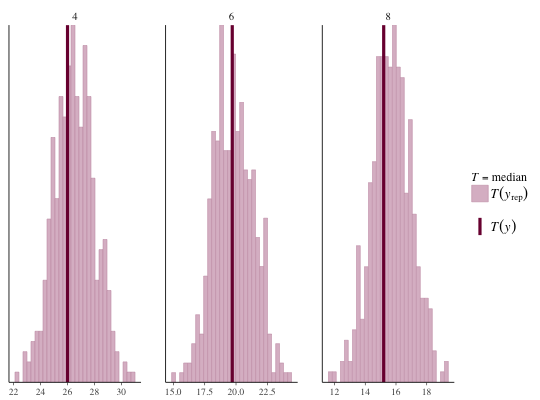pp_check(fit2, plotfun = "bars_grouped", group = esoph$agegp, nreps = 500, prob = 0.5)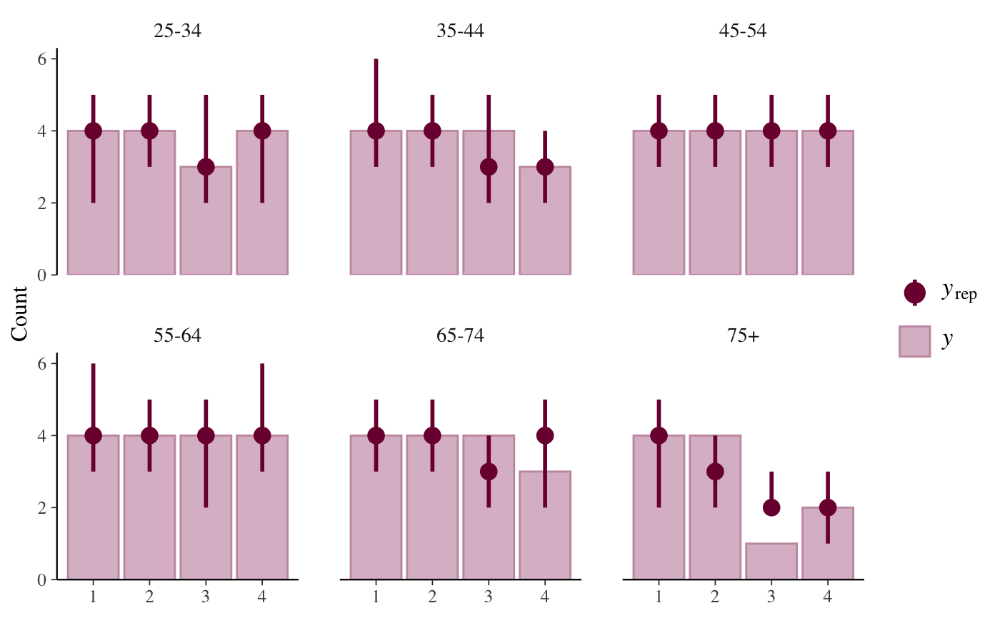# }